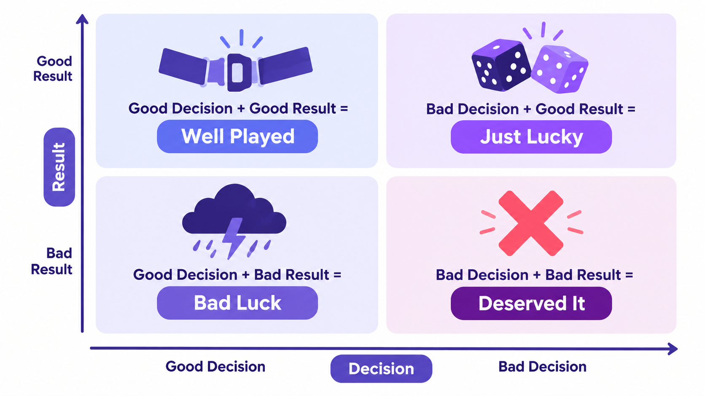

A coach makes "the worst call in Super Bowl history". A psychologist turned poker champion says everyone judged it wrongly, and shows why good decisions and good results are not the same thing.
Ten words. Work through the four activities. Say your answer out loud before you reveal it.
Three words: luck · the odds · uncertainty. Say the right one, then reveal.
Read each part. After it, there's a quick check (answer from memory first), then one question to discuss.
It is 1 February 2015, and this is the Super Bowl, the biggest game in American football. More than 100 million people are watching on TV. The Seattle Seahawks are losing 28–24 to the New England Patriots. But Seattle has the ball, just one yard from scoring. There are 26 seconds left.
Almost everyone expects Seattle to run with the ball. They have one of the strongest runners in the game, Marshawn Lynch. Instead, the coach, Pete Carroll, calls a pass. The quarterback throws. The ball is caught, but by a New England player. The game is over. Seattle has lost.
The reaction was brutal. Newspapers, TV experts and angry fans all said the same thing: it was the worst decision in Super Bowl history. For weeks, Carroll was one of the most criticised men in America.
But one person watching disagreed. Her name was Annie Duke, and for almost twenty years she had made difficult decisions for a living, with real money on the table.
1. What was the situation with 26 seconds left?
2. What did Pete Carroll decide, and what happened?
1. Seattle were losing 28–24, but they had the ball one yard from scoring. A score would win them the Super Bowl.
2. He called a pass instead of a run. A New England player caught the ball, and Seattle lost.
Annie Lederer was born in 1965 in New Hampshire, in the United States. Her father taught English and wrote popular books about language. She studied English and psychology at Columbia University. Then she started a PhD in cognitive psychology at the University of Pennsylvania. That's the science of how people think, learn and make decisions.
She was close to finishing when she became seriously ill. She left the university and moved to Montana with her husband, and money was short. Her older brother, Howard, was a professional poker player. He suggested that she try poker. Soon she was playing in a bar in the town of Billings, and winning.
She quickly realised that poker was a real-life laboratory for everything she had studied. Every hand is a decision made without all the facts. You can't see the other players' cards. You can play perfectly and still lose. You can play badly and still win. The good players are not the ones who win every hand. They're the ones who make good bets again and again, and accept that luck decides the rest.
She became one of the best players in the world, in a game where almost all the top players were men. In 2004 she won the World Series of Poker Tournament of Champions and a prize of two million dollars. In 2012 she left professional poker, and started teaching people how to make better decisions.
1. What did Annie study, and why did she leave university?
2. Why was poker a "real-life laboratory" for her?
1. English and psychology, then a PhD in cognitive psychology. She became seriously ill shortly before finishing it.
2. Every hand is a decision without all the facts: hidden cards, and luck. So it was a perfect place to see how people decide under uncertainty.
In 2018 she published her book, Thinking in Bets. It begins with Pete Carroll's pass. Her argument is that the call was not nearly as bad as people said. Over many seasons, passes thrown from one yard out were almost never caught by the other team, only about 2% of the time. A pass that fails also stops the clock, so Seattle would still have had time for two more tries. If a Seattle player had caught that ball, the same newspapers would have called Carroll a genius. Same decision, different luck.
Duke has a name for judging a decision only by its result: resulting. We all do it. A friend drives home after drinking, arrives safely, and decides it was fine. A company makes a careless choice, gets lucky, and calls it strategy. A doctor makes a careful choice, the patient dies anyway, and the doctor blames herself.
Her solution is to treat every decision as a bet on an uncertain future. The mathematician John von Neumann, who invented game theory, said that real life is more like poker than chess. In chess you can see everything. In poker, and in life, some information is always hidden, and luck always plays a part. So instead of asking "Did it work?", we should ask better questions. What did I know at the time? How sure was I? What could I have learned before deciding? And was the result mostly skill, or mostly luck?
Five ideas from the book. Read each idea. Can you think of an example from real life? Say it, then reveal one.
1. Give two reasons why Duke thinks the pass was not a terrible decision.
2. What is "resulting"? Give one example from the story.
1. Passes from one yard out were very rarely caught by the other team (about 2%), and a failed pass stops the clock, which left time for two more tries.
2. Judging a decision only by its result. Examples: the driver who got home safely after drinking; the lucky company; the doctor who blames herself; the fans judging Carroll.
Duke's advice is simple: don't just say "yes" or "no" about the future. Say how sure you are. English has a whole scale of phrases for this.
Each sentence shows how sure the speaker is. Choose the phrase in brackets that matches it and write it in the gap.
1. (95%) She's trained for years, and her opponents are all beginners. She win. (is bound to / might / is unlikely to)
2. (20%) Our best player is injured. We win on Saturday. (will probably / are unlikely to / are certain to)
3. (50%) The sky is grey, but the forecast is good. It rain later. (will definitely / is bound to / might)
4. (75%) The first film made millions. The second one be a hit too. (is likely to / definitely won't / might not)
1. is bound to 2. are unlikely to 3. might 4. is likely to
Rewrite each idea using the word in brackets. Write only the missing words.
1. "I'm 75% sure he'll accept the job." → He accept the job. (likely)
2. "I don't think they'll run with the ball." → They run with the ball. (probably)
3. "It's almost certain that prices will go up." → Prices go up. (bound)
1. is likely to 2. probably won't 3. are bound to
Check the machinery: be + likely/bound + to; probably before won't.
Use the words in brackets to fill each gap, then read the whole text aloud.
Before every hand, a good player asks: how sure am I? "My cards are strong, so I (likely) win this hand. I'd say 70%. The player opposite (unlikely) have anything better, but you never know. There's (good / chance) he's bluffing, because he's done it three times tonight. One thing is certain: if I bet everything on every hand, I (bound) lose in the end." And if she loses this hand? A bad result (not / necessarily) mean a bad decision.
am likely to · is unlikely to · a good chance (that) · am bound to · doesn't necessarily
That last sentence is the whole book in six words.
Take the probability scale into the Speak tab. You'll be making predictions, and saying exactly how sure you are.

Duke says every result comes from two things: the quality of the decision, and luck. For each person, decide: good or bad decision? good or bad result? Say it, then reveal.
All of it out loud, against the clock. Use the key words, the five ideas, and the probability scale.
Tell the story: the Super Bowl pass → the headlines → Annie's path from psychology to poker → the book → resulting → the five ideas.
Then be Pete Carroll at a press conference. Defend your decision using Duke's arguments. Use at least five key words (outcome, hindsight, blame, luck, the odds, uncertainty, gamble, confident, predict, bet).
Make five predictions about the next twelve months: in the news, in sport, in technology, or in your town. Give each one a number. How sure are you, and would you bet on it?
Think of a decision that turned out well or badly. Separate the two parts: how good was the decision itself, and how much was luck?
Prefer something less personal? Take one of these:
I can… explain the difference between a good decision and a good result, and say how sure I am with the language of probability.